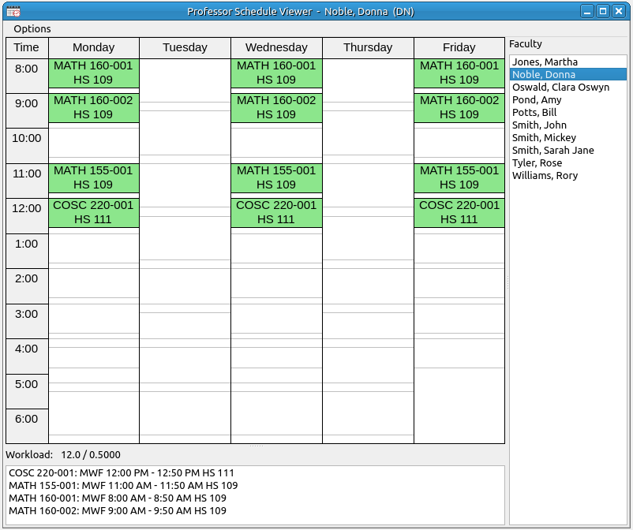
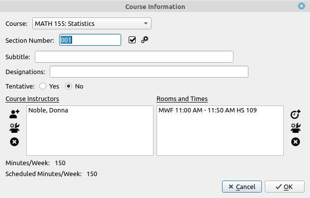

Professor Schedule Viewer
The professor schedule viewer is not as functional as the room viewer as it does not allow drag and drop, but it is convenient to have visible while scheduling to make sure that the individual's schedule matches their needs and does not make their work week unmanageable, for example inadvertently giving them four classes in a row.

- The layout of this view is each professor is listed on the right, the courses assigned to that professor are below and in the list at the bottom and the weekly schedule area shows the layout of the courses for that professor listing the course, section, and room. The title bar shows the professor's name and short designation.
- The color of the box containing the course uses the same color codes that are in the status column of the Course/Faculty Assignments window. Red for unscheduled, yellow for partially scheduled, green for fully scheduled and light green for over-scheduled.
- Tentative courses are rendered in gray and italics.
- If you double-click on a room the room editor will be invoked to edit the properties of the room.
- If yow double-click a course either in the listing at the bottom or on the weekly viewer the course information dialog will appear with the particular course loaded. In addition, a Ctrl+Click on a course in the weekly viewer will do the same. The workings of the course information dialog are discussed in its own section.

- If you right-click on a course either in the listing at the bottom or on the weekly viewer a pop-up menu will appear with the following options.
- Course Properties: Invokes the course information dialog for the selected class.
- Tentative: Check box for designating the course as tentative or real.
- Remove Course from Rooms: This will remove the rooms and times from the scheduling of this class but leave the class in the schedule with the current instructor or instructors.
- Remove Course from Schedule: This will remove the course from the schedule.
Options:
- Add New Faculty: This invokes the new faculty input dialog to add in new faculty members to the faculty database.
- Edit Faculty: This will open the faculty input dialog but with only one line and the data of the currently selected faculty member loaded into the cells. Edit the fields as desired and click the OK button to finish editing.
- Delete Faculty Member: This will delete the currently selected faculty member. If any classes in the schedule are being taught by this faculty member they will be removed from the schedule. Unless the course is team taught and then the faculty member is removed from the team and the course remains in the schedule.
- Save Image: Saves the weekly view image to an image file. The file type is any type supported by your operating system and the graphical user interface. The three main types supported are png, jpg, and bmp. The type is automatically selected from the extension used for the filename. The default is png.
- Copy Image: This will copy the image to the system clipboard.
- Print: This will send the weekly image to the selected printer using the dimensions and scaling that are selected in the Image Printing Options.
- Print Preview: This will invoke the print preview dialog for the weekly image.